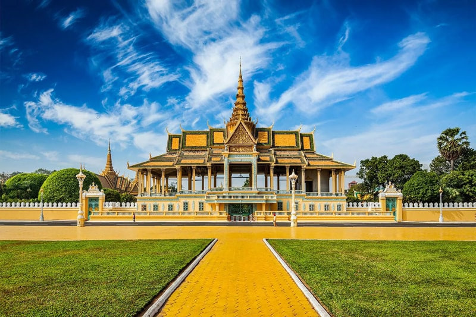
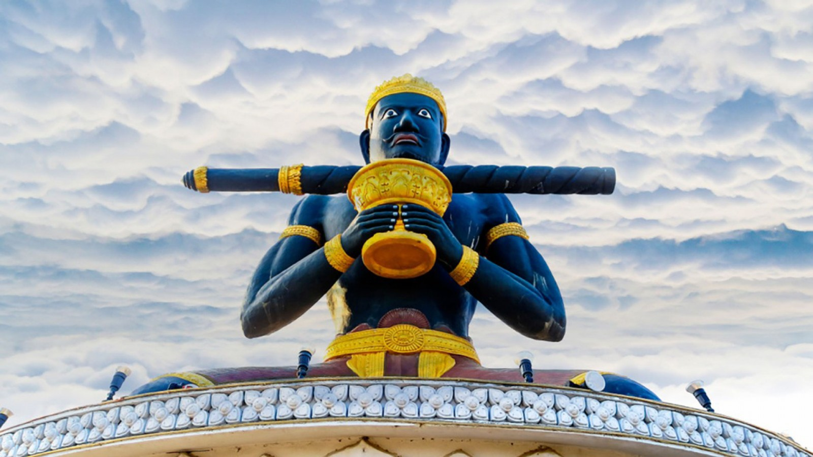
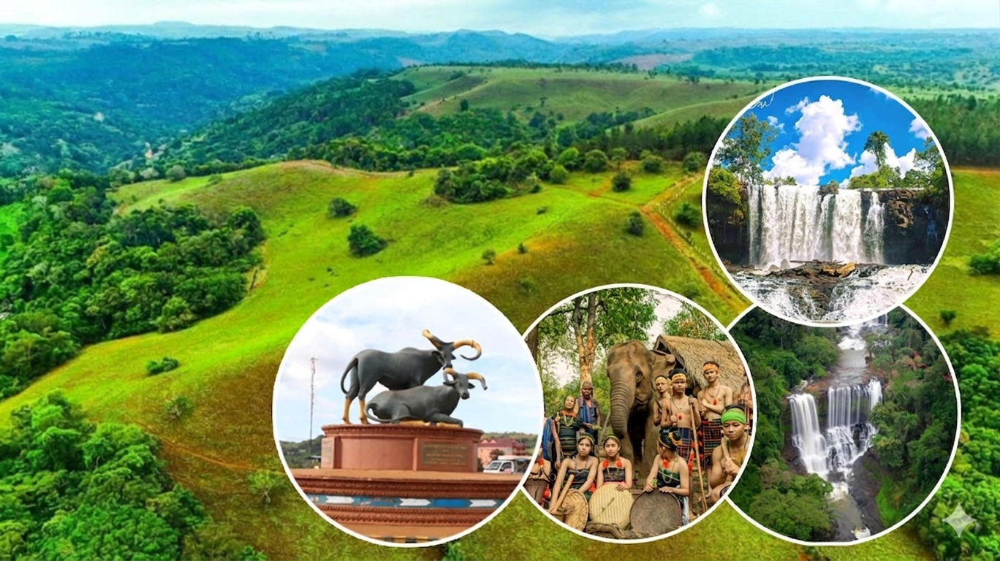
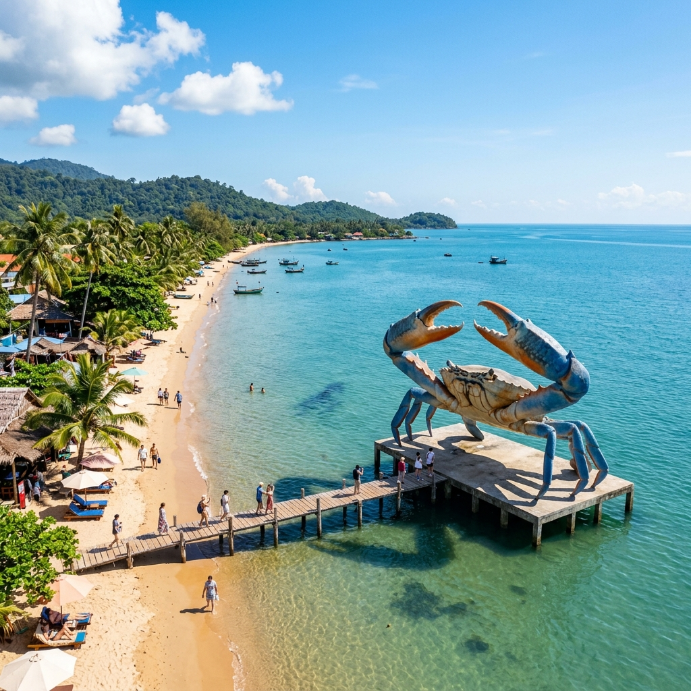
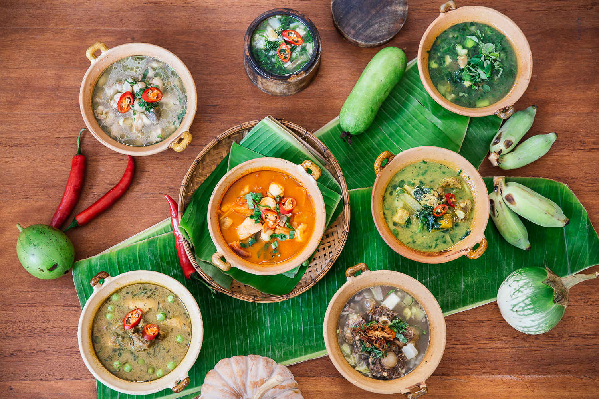

ស្វែងយល់ពីអាថ៌កំបាំងនៃព្រះរាជាណាចក្រ កម្ពុជា
ស្វែងយល់ពីព្រលឹងបុរាណនៃតំបន់អាស៊ីអាគ្នេយ៍ តាមរយៈបទពិសោធន៍ដែលពោរពេញដោយវប្បធម៌បុរាណអស្ចារ្យ បេតិកភណ្ឌអង្គរ ទេសភាពធម្មជាតិអស្ចារ្យ និងអរិយធម៌ខ្មែរ។
រៀបចំគម្រោង





(1).jpg)
គោលដៅទេសចរណ៍ពេញនិយម
ស្វែងរកសម្រស់ដ៏អស្ចារ្យនៃព្រះរាជាណាចក្រកម្ពុជា តាមរយៈតំបន់ទេសចរណ៍ដែលល្បីល្បាញបំផុត។


បទពិសោធន៍ដ៏ល្អឥតខ្ចោះ
យើងផ្តល់ជូននូវសេវាកម្មទេសចរណ៍គ្រប់ជ្រុងជ្រោយ ដើម្បីធានាថាដំណើរកម្សាន្តរបស់អ្នកមានភាពរលូន និងមិនអាចបំភ្លេចបាន។

សណ្ឋាគារ
ស្នាក់នៅក្នុងសណ្ឋាគារលំដាប់ផ្កាយ ជាមួយនឹងផាសុកភាពខ្ពស់ និងសេវាកម្មដ៏ល្អឯកទូទាំងប្រទេស។
ស្វែងរកកន្លែងស្នាក់នៅ
ភោជនីយដ្ឋាន
រីករាយជាមួយរសជាតិអាហារខ្មែរពិតៗ និងអាហារអន្តរជាតិដ៏ឈ្ងុយឆ្ងាញ់ក្នុងបរិយាកាសដ៏រ៉ូមែនទិក។
មើលបញ្ជីអាហារ
មគ្គុទ្ទេសក៍
ស្វែងយល់ពីប្រវត្តិសាស្ត្រ និងវប្បធម៌ខ្មែរយ៉ាងស៊ីជម្រៅ ជាមួយមគ្គុទ្ទេសក៍អាជីពដែលរួសរាយរាក់ទាក់។
ជ្រើសរើសមគ្គុទ្ទេសក៍
ការដឹកជញ្ជូន
សេវាកម្មដឹកជញ្ជូនប្រកបដោយសុវត្ថិភាព និងផាសុកភាព មិនថាអ្នកធ្វើដំណើរជាក្រុម ឬលក្ខណៈឯកជន។
មើលសេវាកម្មដឹកជញ្ជូនមគ្គុទ្ទេសក៍តាមបណ្តាខេត្ត
ជួបជាមួយអ្នកជំនាញក្នុងតំបន់ដែលត្រៀមខ្លួនជាស្រេច ដើម្បីនាំអ្នកទៅកាន់កន្លែងដែលល្អបំផុត និងរឿងរ៉ាវដែលអ្នកមិនធ្លាប់ដឹង។
 សៀមរាប
សៀមរាប
អ្នកជំនាញប្រវត្តិសាស្ត្រ
ស្វែងយល់ពីអាថ៌កំបាំងនៃប្រាសាទបុរាណ ជាមួយមគ្គុទ្ទេសក៍ដែលមានជំនាញឯកទេសខាងបុរាណវិទ្យា។
 កំពត
កំពត
អ្នកជំនាញធម្មជាតិ
ដើរកម្សាន្តតាមចម្ការម្រេច និងភ្នំបូកគោ ជាមួយអ្នកជំនាញដែលស្គាល់គ្រប់ផ្លូវក្នុងខេត្តកំពត។
 ព្រះសីហនុ
ព្រះសីហនុ
អ្នកជំនាញសមុទ្រ
ស្វែងរកកោះស្ងប់ស្ងាត់ និងតំបន់មុជទឹកមើលផ្កាថ្ម ជាមួយអ្នកជំនាញក្នុងតំបន់ឆ្នេរ។
 មណ្ឌលគិរី
មណ្ឌលគិរី
អ្នកជំនាញអេកូឡូស៊ី
បទពិសោធន៍រស់នៅជាមួយដំរី និងជនជាតិដើមភាគតិច ជាមួយមគ្គុទ្ទេសក៍ការពារបរិស្ថាន។
ភ្នំពេញ
អ្នកជំនាញវប្បធម៌
ស្វែងយល់ពីការវិវត្តនៃរាជធានីភ្នំពេញ ពីសម័យកាលប្រវត្តិសាស្ត្ររហូតដល់សម័យទំនើប។
បាត់ដំបង
អ្នកជំនាញសិល្បៈ
ស្វែងរកវិចិត្រសាលសិល្បៈ និងម្ហូបអាហារប្លែកៗ ជាមួយអ្នកជំនាញក្នុងក្រុងបាត់ដំបង។
កែប
អ្នកជំនាញសម្រាកកាយ
ទស្សនាផ្សារក្តាម និងឆ្នេរសមុទ្រស្ងប់ស្ងាត់ ជាមួយមគ្គុទ្ទេសក៍ដែលយល់ពីតម្រូវការសម្រាកកាយ។
កោះកុង
អ្នកជំនាញផ្សងព្រេង
រុករកព្រៃកោងកាង និងភ្នំក្រវាញ ជាមួយមគ្គុទ្ទេសក៍ដែលចូលចិត្តការផ្សងព្រេងពិតៗ។
វិចិត្រសាលរូបភាព
ទស្សនាសម្រស់ដ៏អស្ចារ្យនៃធម្មជាតិ វប្បធម៌ និងជីវភាពរស់នៅរបស់ប្រជាជនកម្ពុជា តាមរយៈកែវភ្នែកអ្នកថតរូប។

រឿងរ៉ាវធ្វើដំណើរ
មគ្គុទ្ទេសក៍
កោះសម្ងាត់ទាំង ៥ នៅខេត្តព្រះសីហនុ
ស្វែងយល់ពីកោះដែលស្ងប់ស្ងាត់ និងមានសម្រស់ស្រស់ស្អាតបំផុតដែលមិនទាន់មានមនុស្សស្គាល់ច្រើន...
អានបន្ថែម ម្ហូបអាហារ
ម្ហូបអាហារ
រសជាតិម្រេចកំពត៖ អាថ៌កំបាំងម្ហូបខ្មែរ
ដំណើរទៅកាន់ចម្ការម្រេចដ៏ល្បីល្បាញ និងការស្វែងយល់ពីវិធីចម្អិនម្ហូបជាមួយម្រេចលំដាប់ពិភពលោក...
អានបន្ថែម ប្រវត្តិសាស្ត្រ
ប្រវត្តិសាស្ត្រ
ដើរតាមគន្លងអង្គរ៖ ដំណើររុករកប្រាសាទ
បទពិសោធន៍ថ្មីក្នុងការរុករកប្រាសាទបុរាណដែលមិនទាន់មានការជួសជុល និងសម្រស់បែបធម្មជាតិ...
អានបន្ថែម សិល្បៈ
សិល្បៈ
បាត់ដំបង៖ ទីក្រុងនៃសិល្បៈ និងវប្បធម៌
ស្វែងយល់ពីមូលហេតុដែលបាត់ដំបងក្លាយជាមជ្ឈមណ្ឌលសិល្បៈដ៏សំខាន់របស់កម្ពុជា
អានបន្ថែម ជីវិតរស់នៅ
ជីវិតរស់នៅ
ភ្នំពេញពេលរាត្រី៖ សម្រស់រាជធានីសម័យថ្មី
ទិដ្ឋភាពដ៏ស្រស់ស្អាតនៃរាជធានីភ្នំពេញនៅពេលយប់ និងកន្លែងកម្សាន្តដែលពេញនិយមបំផុត
អានបន្ថែមផ្សារក្តាមកែប៖ គោលដៅសម្រាប់អ្នកនិយមគ្រឿងសមុទ្រ
រសជាតិក្តាមស្រស់ៗ និងបរិយាកាសឆ្នេរសមុទ្រដ៏ស្ងប់ស្ងាត់ដែលអ្នកមិនគួររំលង
អានបន្ថែម ផ្សងព្រេង
ផ្សងព្រេង
មណ្ឌលគិរី៖ សម្រស់នៃភ្នំ និងសត្វដំរី
ដំណើរផ្សងព្រេងក្នុងព្រៃជ្រៅ និងការរស់នៅជាមួយសត្វដំរីតាមបែបធម្មជាតិពិតៗ...
អានបន្ថែម ធម្មជាតិ
ធម្មជាតិ
កោះកុង៖ ឋានសួគ៌អេកូទេសចរណ៍ដ៏ធំបំផុត
រុករកព្រៃកោងកាងដ៏ធំល្វឹងល្វើយ និងប្រព័ន្ធអេកូឡូស៊ីសមុទ្រដែលសម្បូរបែបបំផុត...
អានបន្ថែមស្វែងយល់ពីអាណាចក្រកម្ពុជា
ជ្រើសរើសខេត្តគោលដៅរបស់អ្នក ដើម្បីមើលទីតាំងច្បាស់លាស់ និងរៀបចំដំណើររុករក។